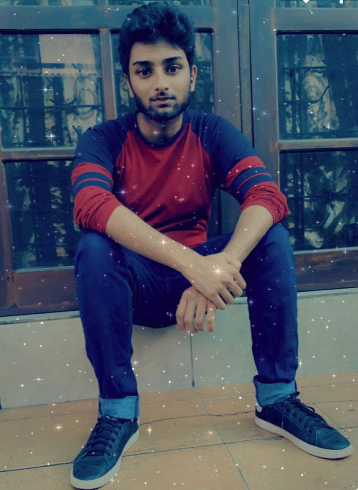

Abdul Ahthief
Role: Student 4
Tasks Completed in SiteMap
- Developed a sitemap using SVG rectrangles, SVG lines and polyline points to create arrows for the sitemap
- Made the site map visually appealing using CSS
- Used javascript to link webpages of the website to the sitemap
Tasks Completed in creating the thumbnail section
- Came up with 5 thumbnail images
- Used CSS to align thumbnail images
- Used Java script event listener to provide larger version of thumbnail image and give a description when hovered
- Used CSS to align the large image with thier descriptions
Overal tasks I took part in the project
- Helped by suggesting ideas to make the main page visually attractive
- Helped with developing extra content page
- Helped by suggesting creative ideas for the website development